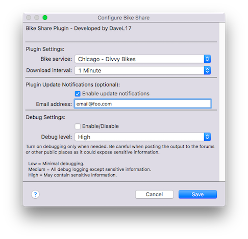

The BikeShare plugin allows users to create Indigo Home Control Server devices representing Bike sharing service locations. Individual devices contain data such as dock
location and number of available bikes.
Installation

Installation is easy. Download and extract the Indigo Plugin file onto your Indigo server machine. Double-click the plugin file and follow the prompts. Presently, the
plugin contains functionality for the following North American bike sharing services:
Aspen - We Cycle
Chattanooga - Bike Chattanooga
Chicago - Divvy Bikes
Columbus - CoGo Bike Share
New York - Citi Bike
San Francisco - Bay Area Bike Share
Toronto - Bike Share Toronto
The plugin supports only one service at a time--but a theoretically unlimited number of stations in that service--and the operation of the plugin is very simple.
Within the plugin preferences, select the bike sharing service that you want to use.
Create a device for the bike dock you want to track. There is no limit to the number of station/devices you can have. The station names are automatically picked up
from the service, so they will always be up to date. I have added a device state called "dataAge" which will give some indication of how current the data are.
Bike Share is compatible with local bike sharing services that subscribe to a specific, standard data sharing format (see below). These files are standardized across bike
sharing services and the resulting JSON file always begins with the following code: {"executionTime":"YYYY-MM-DD HH:MM:SS AM/PM","stationBeanList":
If you have a bike sharing service that you want added to the plugin, it must make it's data available in the "stationBeanList" format. To have a service added to the
plugin, just post the url to the BikeShare forum or send it directly to me via private message from the
Indigo website. Here's a sample file.
This plugin is useful for things like:
Triggers: "Alert me when available bikes drops below a threshold."
Control Pages: adding the number of available bikes.